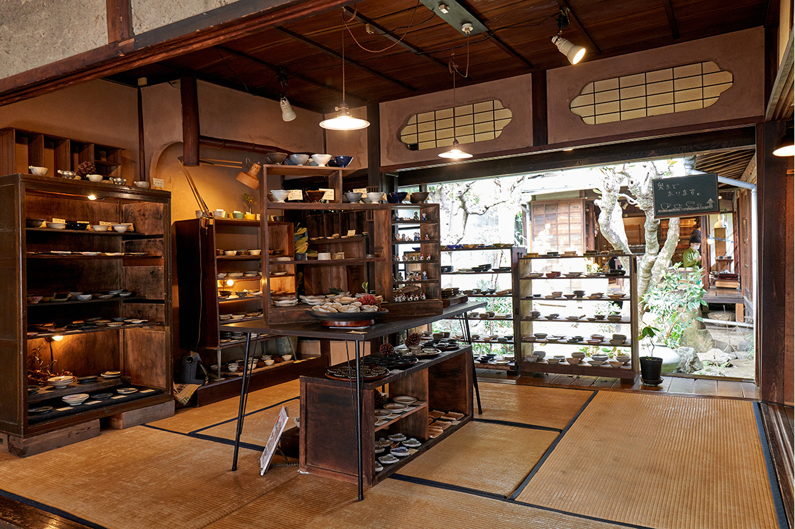
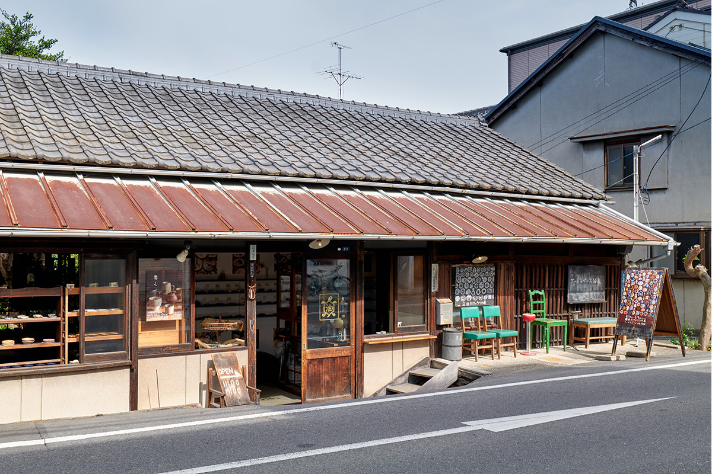
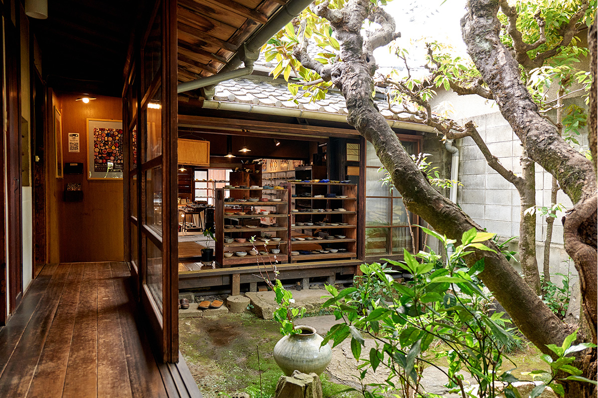
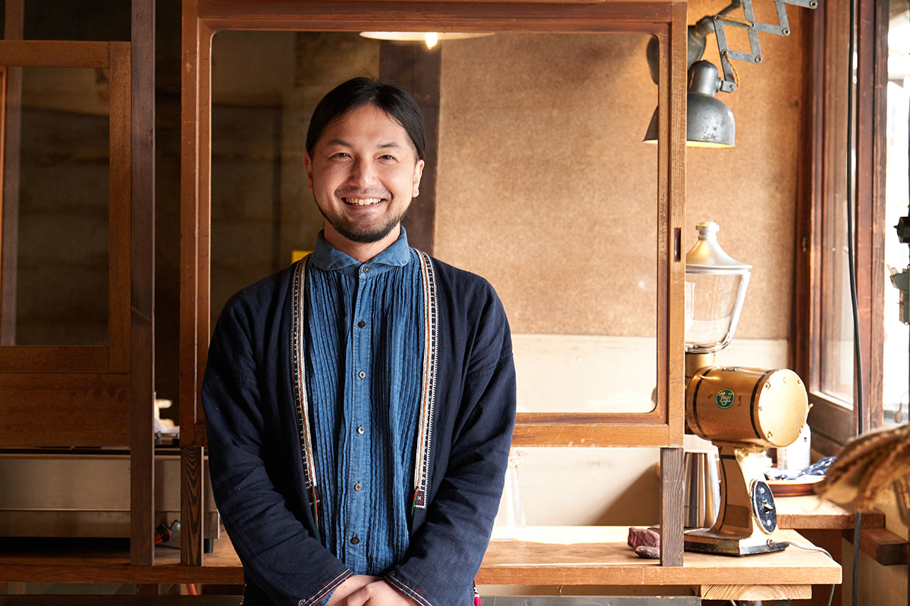
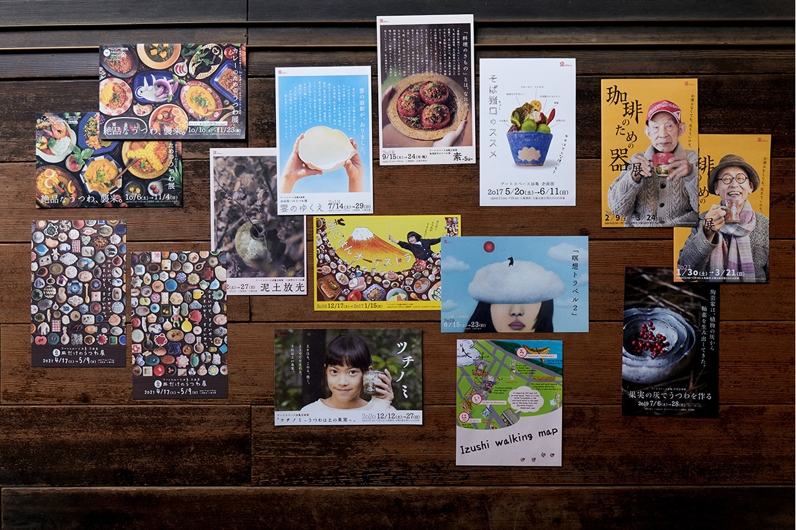

Префектура Окаяма · город Окаяма · ремёсла
«Абуракамэ»: галерея посуды в доме вековой давности

Двадцать минут пешком от вокзала Окаямы, за рекой Асахи, стоит дом, в котором посуда важнее стен. Здесь нельзя предсказать, что увидишь в следующий раз, и именно за этим сюда возвращаются.
Место
Дом, который чудом уцелел
Квартал Дэкусимати лежит на другом берегу реки Асахи напротив сада Коракуэн. Когда-то это был торговый посад, откуда купцы ездили к замку Окаямы, и старинные лавки с характерной архитектурой здесь ещё стоят. В одной из них, бывшей маслобойне возрастом 140 лет, сейчас работает галерея «Абуракамэ».
Десять лет до ремонта дом простоял пустым и, по словам местных, походил на дом с привидениями. Его выкупил и отремонтировал Ёситака Касивадо с друзьями, и в 2007 году здесь открылась галерея. Имя взяли не выдуманное: «Абуракамэ», «масляная черепаха», это старое прозвище, которым квартал называл маслобойню ещё при прошлых хозяевах.

Дом внутри оказался глубже, чем кажется с улицы: одноэтажный, с входной дощатой прихожей, внутренним двориком-цубониява и двумя комнатами татами. Холодный блеск стекла, глиняные кувшины во дворе, сезонные цветы в старых вёдрах: посуда, собранная со всей Японии, сидит в этом доме так, будто стояла здесь всегда.

Человек
Человек, который ищет восторг
Касивадо пришёл в это дело не через искусство, а через походы: ещё в университете он собрал туристический клуб и впервые почувствовал, каково придумывать план и доводить его до конца. После компании снаряжения он объездил командировки и везде знакомился с мастерами, а приехав в Окаяму, обнаружил, что керамистов Бидзэн и стеклодувов здесь десятки. Сначала он брал в аренду пустые помещения и устраивал выставки, а потом нашёл этот дом.
«Мне было важно, чтобы художник вместе со мной радовался замыслу и вкладывался в него до конца. Не гончарный круг сам по себе и не умение делать много и быстро, а восторг, который бьёт из самой работы», говорит Касивадо. Отбор он ведёт лично: в периоды между выставками объезжает мастерские по всей стране и подолгу разговаривает с авторами. Иногда просит переделать: «а если вот так?», и всё это ради момента, когда вещь в руках покупателя вдруг оживает.
Вкус к такому отбору у него семейный. Дед, большой любитель сакэ, собирал гуиноми, чашечки для сакэ, и перед школьными поездками доверял внуку деньги: «купи мне что-нибудь». Мальчик привозил из поездок то, что, как ему казалось, понравится деду, и радость старика стала первой наградой. Впрочем, случалось и «что за ерунда», смеётся Касивадо: «Пожалуй, это и есть моё начало».

Выставки
Кофе, карри и фруктовый пепел
Фирменный жанр галереи это выставки с неожиданным сюжетом. Главная из них, «Выставка посуды для кофе», идёт с 2010 года: в первый раз в ней участвовало около семнадцати художников, теперь их около шестидесяти, от Хоккайдо до Окинавы, и каждый готовит к ней новые работы заранее. Рядом с чашками продают кофе и сладости, так что выставка превращается в длинное кофепитие.
Другие проекты не менее изобретательные: «Выставка одних блюдец», посуда, обожжённая на золе от фруктов. А «Посуда для карри», где больше шестидесяти художников-любителей карри выставили около десяти тысяч предметов, доехала до большого универсального магазина Ханкю Умэда в Осаке. Эти три выставки составляют большую тройку галереи и собирают ценителей со всей страны.

Экспозиция меняется почти каждый месяц, между выставками дом закрывается на перевеску. Расписание публикуется на сайте, там же работает интернет-магазин галереи.
Галерея «Абуракамэ» (Art Space Aburakame)
- Адрес
- префектура Окаяма, город Окаяма, район Кита, Дэкусимати, 2-3-1
- Телефон
- +81 86-201-8884
- Часы работы
- 10:00–18:00
- Выходные
- нефиксированные, график выставок на сайте
- Как добраться
- 20 минут пешком от вокзала Окаямы; трамваем в сторону Хигасиямы до остановки Дзёка, далее 7 минут пешком; автобусом компании Уно в сторону Хигаси-Окаямы до остановки Сюцуги-коко-маэ, далее 3 минуты пешком
- Сайт
- aburakame.com
Фото: Каори Нагано, Марико Тая.